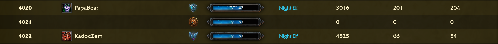
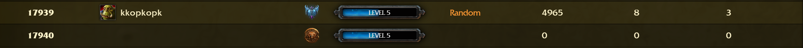
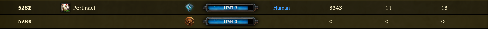
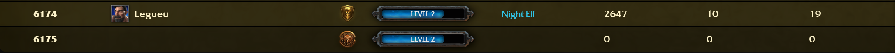
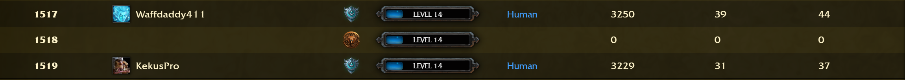

Warcraft III game bugs found during our automated scans and tests – not errors of our own reading. Each one has evidence (a crop from the game), a date, the patch and its reporting status towards Blizzard.
The in-game Leaderboard shows entries that belong to no player: the name and race are empty, MMR is 0 and wins/losses are 0/0, yet the entry has a rank, a level and the Combatant league medal. In 1v1 the same two entries (level 42 and level 5) appear in every scan from 26 to 29 October 2026 and move down the list with everyone else (rank 3909 -> 4021 and 17609 -> 17940). The same kind of entry is in 2v2 (ranks 5283 and 6175) and 3v3 (rank 1518) on 27 October.

1v1, rank 4021 (between 4020 and 4022), scan 29 Oct 2026, patch 3.0.1.24371: rank, level 42 and the Division 1 medal are drawn, but the name is empty, there is no race and MMR / wins / losses are 0 / 0 / 0.

1v1, rank 17940 (below 17939), scan 29 Oct 2026, patch 3.0.1.24371: rank, level 5 and the Division 1 medal are drawn, but the name is empty, there is no race and MMR / wins / losses are 0 / 0 / 0.

2v2, rank 5283 (below 5282), scan 27 Oct 2026, patch 3.0.1.24371: rank, level 3 and the Division 1 medal are drawn, but the name is empty, there is no race and MMR / wins / losses are 0 / 0 / 0.

2v2, rank 6175 (below 6174), scan 27 Oct 2026, patch 3.0.1.24371: rank, level 2 and the Division 1 medal are drawn, but the name is empty, there is no race and MMR / wins / losses are 0 / 0 / 0.

3v3, rank 1518 (between 1517 and 1519), scan 27 Oct 2026, patch 3.0.1.24371: rank, level 14 and the Division 1 medal are drawn, but the name is empty, there is no race and MMR / wins / losses are 0 / 0 / 0.